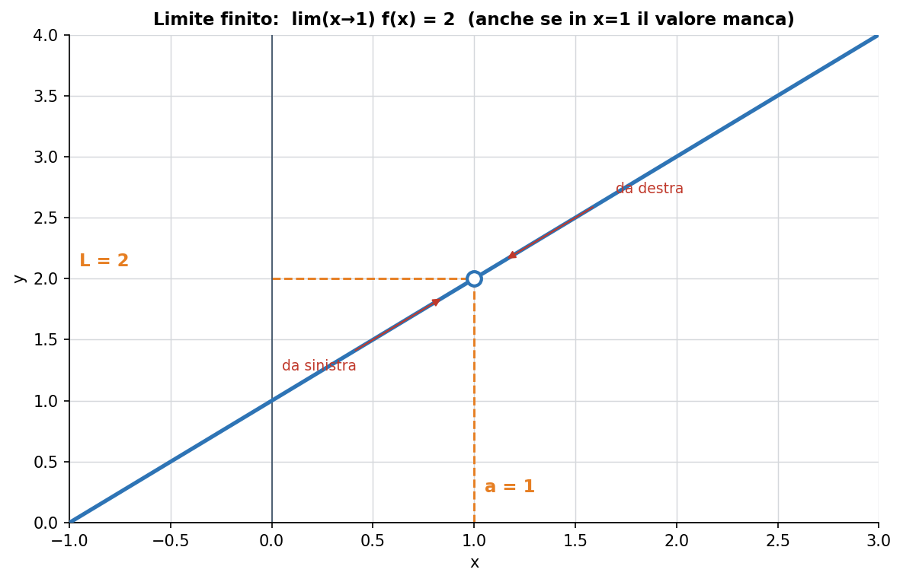
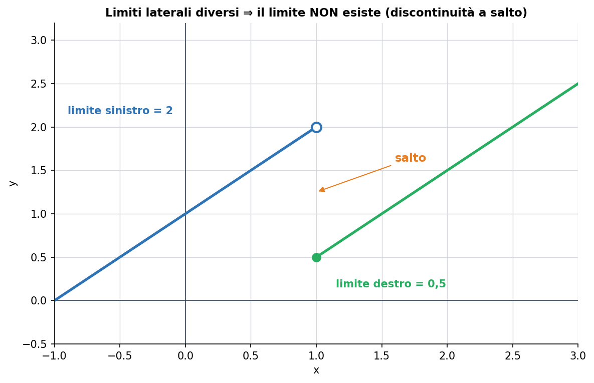
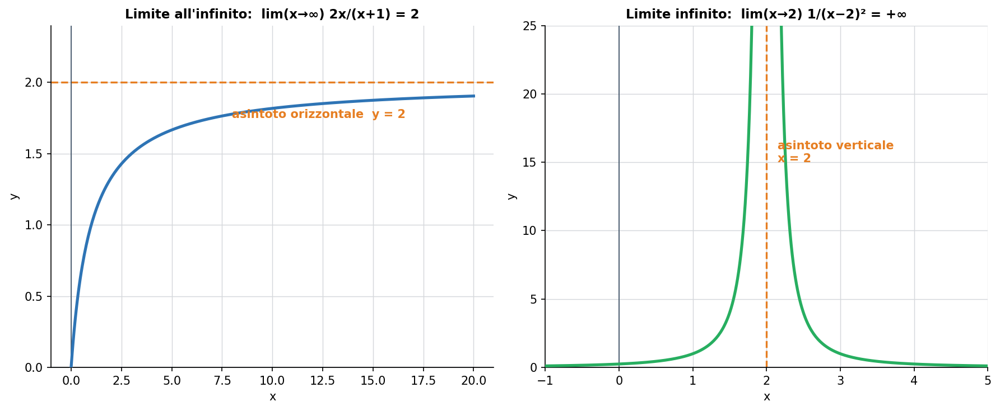
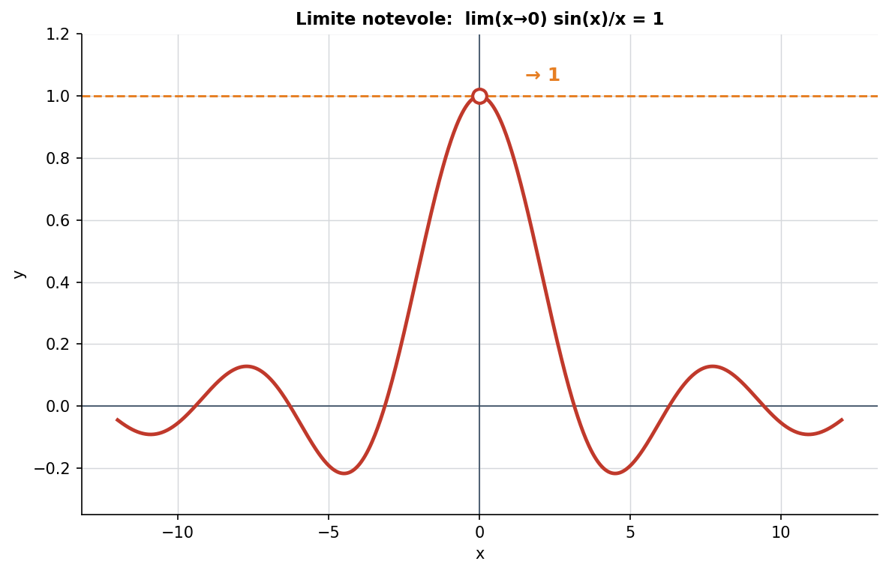
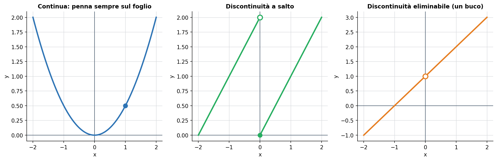

Primo argomento del blocco calcolo differenziale in una variabile del programma di Udine (MATH-03/A). Il limite è lo strumento con cui, più avanti, si definiranno le derivate: è quindi il vero ingresso al cuore dell'analisi.
1. L'idea di limite
Il limite risponde a una sola domanda: verso quale valore si avvicina la funzione quando la x si avvicina a un certo punto? La cosa cruciale, quasi controintuitiva, è che non conta il valore nel punto, ma il comportamento avvicinandosi. È come guardare dove è diretta un'auto: non importa dov'è adesso, importa dove sta andando.

Fig. 1 — Avvicinandosi a x = 1 da destra e da sinistra, la funzione punta a L = 2, anche se in x = 1 il valore manca (il pallino è vuoto).
Si scrive:
lim (x→a) f(x) = L
e si legge “il limite, per x che tende ad a, di f(x), è L”.
2. Limiti destro e sinistro
Ci si può avvicinare al punto da due parti: da sinistra (valori più piccoli) e da destra (valori più grandi). Il limite “vero” esiste solo se i due limiti laterali coincidono. Se sono diversi, la funzione fa un salto e il limite non esiste.

Fig. 2 — Da sinistra la funzione tende a 2, da destra a 0,5: i due valori sono diversi, quindi il limite in quel punto non esiste.
3. Limiti all'infinito e limiti infiniti
Due situazioni diverse, spesso confuse:
Limite ALL'infinito (x → ∞): dove va la funzione quando x cresce senza limite. Se si stabilizza su un valore, quello è un asintoto orizzontale — in elettronica, il regime permanente.
Limite INFINITO (f → ∞): la funzione stessa esplode avvicinandosi a un punto. Quel punto è un asintoto verticale.

Fig. 3 — A sinistra: per x→∞ la funzione tende a 2 (asintoto orizzontale). A destra: avvicinandosi a x=2 la funzione tende a +∞ (asintoto verticale).
4. Un limite notevole da ricordare
Alcuni limiti compaiono di continuo e conviene saperli a memoria. Il più famoso riguarda il rapporto tra il seno e il suo angolo:
lim (x→0) sin(x) / x = 1
In x = 0 il rapporto darebbe 0/0 (privo di senso diretto), eppure avvicinandosi a zero la funzione punta chiaramente a 1. È l'esempio perfetto di limite “col buco”.

Fig. 4 — sin(x)/x non è definito in x = 0, ma il limite vale 1.
Altri due utili: (1 + 1/x)ˣ → e per x→∞ (definisce il numero di Nepero), e (eˣ − 1)/x → 1 per x→0.
5. Le forme indeterminate
A volte sostituendo il valore si ottengono espressioni prive di significato immediato, dette forme indeterminate: le più comuni sono 0/0, ∞/∞, ∞ − ∞, 0·∞. Non vogliono dire “non esiste”: vogliono dire “serve lavorare di più” (semplificando, razionalizzando, o con strumenti come i limiti notevoli e — più avanti — la regola di de l'Hôpital).
Esempio svolto. lim(x→1) (x² − 1)/(x − 1) sembra 0/0. Ma x² − 1 = (x − 1)(x + 1), quindi la frazione si semplifica in x + 1, e il limite vale 2 (è proprio la Fig. 1).
6. La continuità
Una funzione è continua in un punto se la puoi disegnare senza staccare la penna dal foglio. In termini precisi: il valore della funzione nel punto coincide con il suo limite, cioè f(a) = lim(x→a) f(x).

Fig. 5 — A sinistra una funzione continua; al centro una discontinuità a salto; a destra una discontinuità eliminabile (basta “riempire il buco”).
Quasi tutte le grandezze fisiche di un circuito sono funzioni continue del tempo. In particolare, la tensione ai capi di un condensatore non può cambiare istantaneamente: è continua. Questa proprietà è la chiave per capire i transitori (Lezioni future).
7. A cosa serve in elettronica
Regime permanente: il valore finale di un transitorio è un limite per t → ∞.
Comportamento agli estremi: un condensatore a frequenza → 0 è un circuito aperto, a frequenza → ∞ un corto circuito. Sono limiti dell'impedenza.
Continuità: tensione sul condensatore e corrente nell'induttore non fanno salti, e questo vincola l'evoluzione dei circuiti.
Errori tipici da evitare
Confondere il valore della funzione nel punto con il limite: sono cose diverse (Fig. 1).
Dire che un limite esiste senza controllare che i due limiti laterali coincidano.
Trattare 0/0 o ∞/∞ come se fossero un numero: sono forme indeterminate, vanno risolte.
Scambiare limite all'infinito (x→∞) con limite infinito (f→∞): sono due cose diverse.